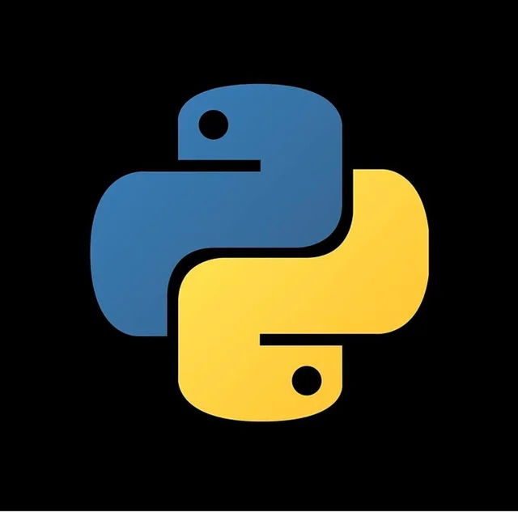

Why Python?
Python is undoubtedly considered a top programming language at the same level as JavaScript or C++, and it’s one of the most used languages by businesses and enterprises. Even though it’s almost 30 years old, Python is still relevant, given its ease of use, its vibrant community, and many applications. Those characteristics should be enough to support the claim as a top programming language, but let’s dive a little more into it to understand Python’s value truly.
Python is a programming language that does it all, from web applications to video-games, Data Science, Machine Learning, real-time applications to embedded applications, and so much more. Facebook, Google, Dropbox, Spotify, Quora, Wikipedia, Netflix, Yahoo!, NASA, and many other companies use Python due to the many benefits it conveys. It is one of the most flexible, reliable, and capable programming languages in the world, and it plays a major role in most types of software development projects.
